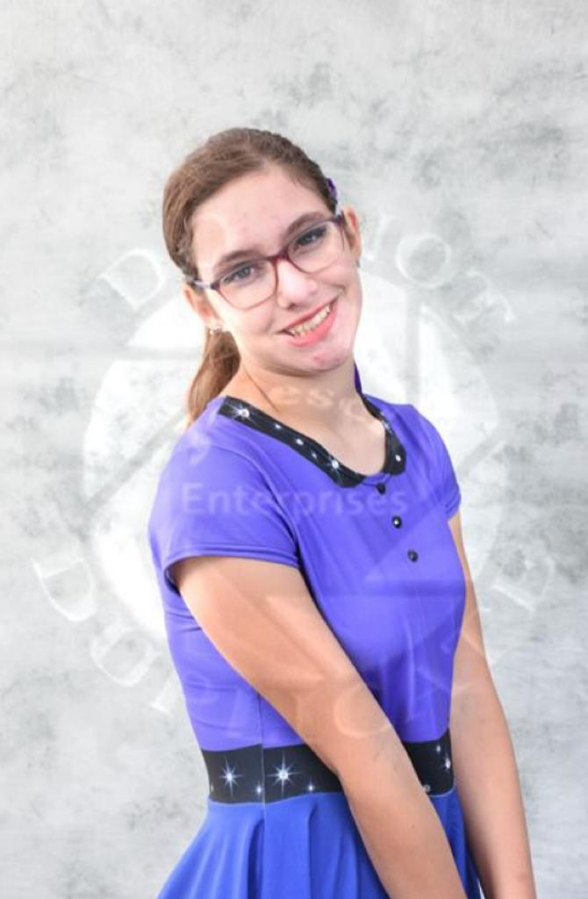
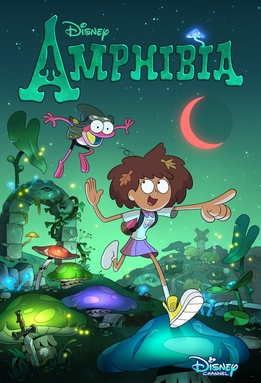
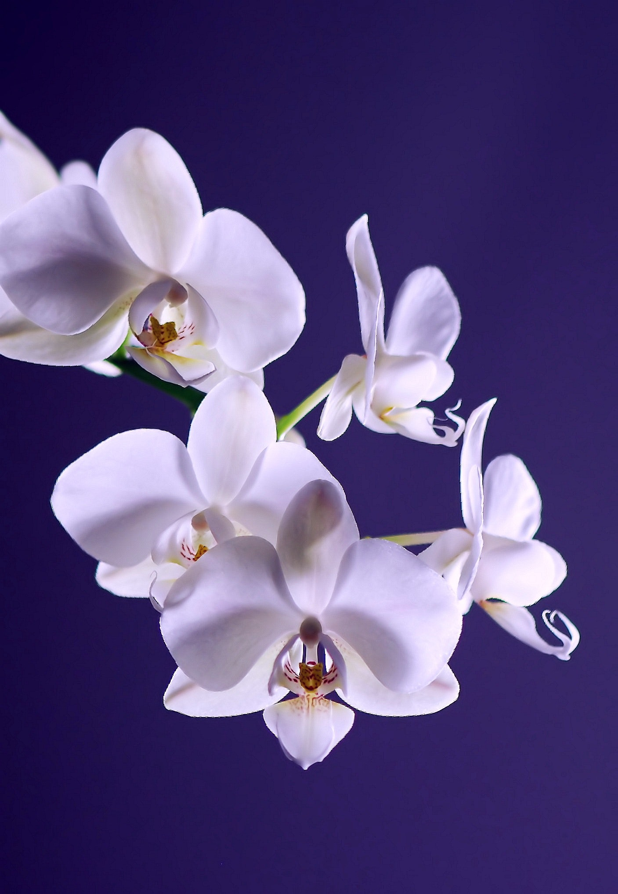
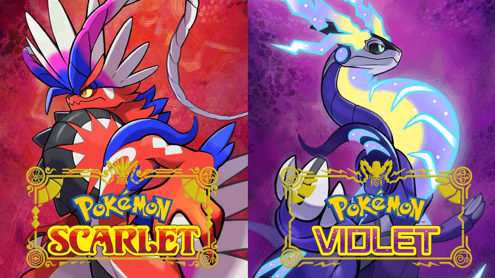
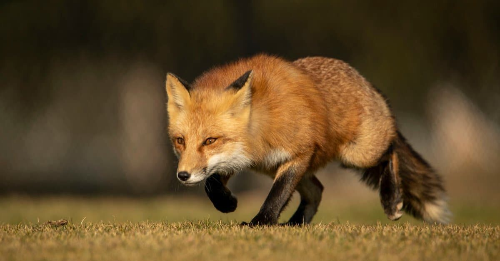
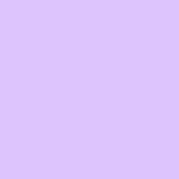

This webpage is about me I guess, like stuff I like and other things.
I have two cats and two dogs, and I have a small cactus plant in my house. I like video games and animated TV shows, which I prefer over live-action shows and movies. My favorite game franchise is Pokemon. I am also an admin on the Piggy Wiki Fandom, however I am not always active. I am also a fan of a youtube animation genre known as "object shows", with my favorites being hfjONE, BFB, and Inanimate Insanity. I also like to draw, such as doodling my characters on my work paper when I'm supposed to be working, and I love reading as well. I'd like to become an animator, and have created plans for several shows(all involving my characters of course).
A picture of me after performing at Bands of America for marching band.
"In this life, you will meet with both admiration and abuse from others. How others choose to view you is a choice only they can make. You cannot make it for them. All that truly matters is that you hold firm to your own values." - Cyllene from Pokemon Legends: Arceus
| Favorite Book Genre | Fantasy | |
|---|---|---|
| Favorite Cartoon | Amphibia |  |
| Favorite Flower | Orchid |  |
| Favorite Video Game | Pokemon Scarlet and Violet |  |
| Favorite Animal | Fox |  |
| Favorite Color | Lavender |  |
Email: nicoleweb@emailme.com
Phone: 987-654-0312